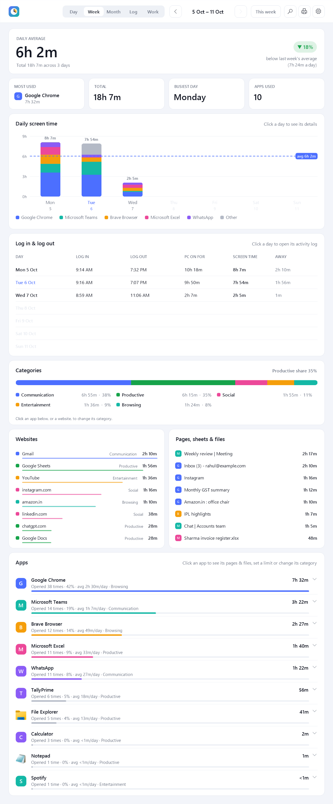
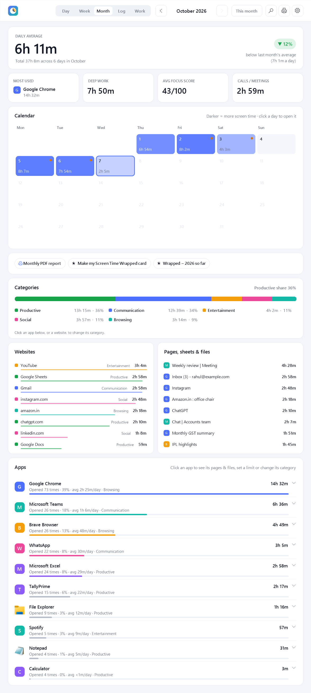
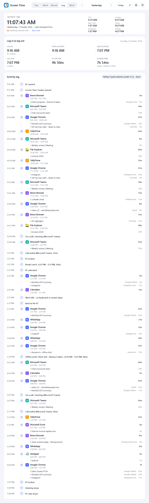
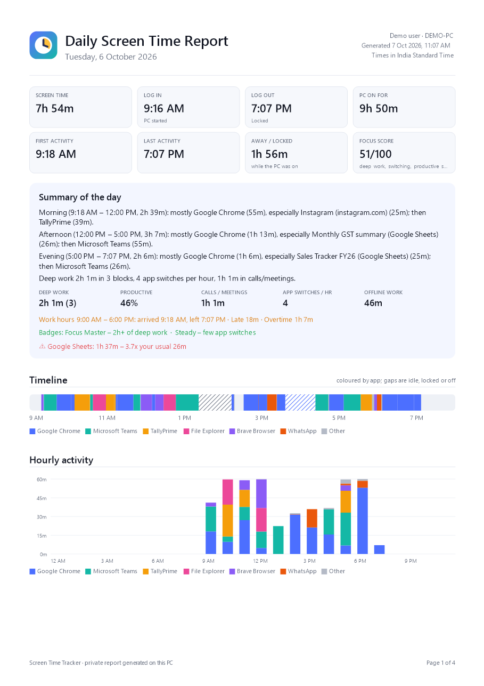
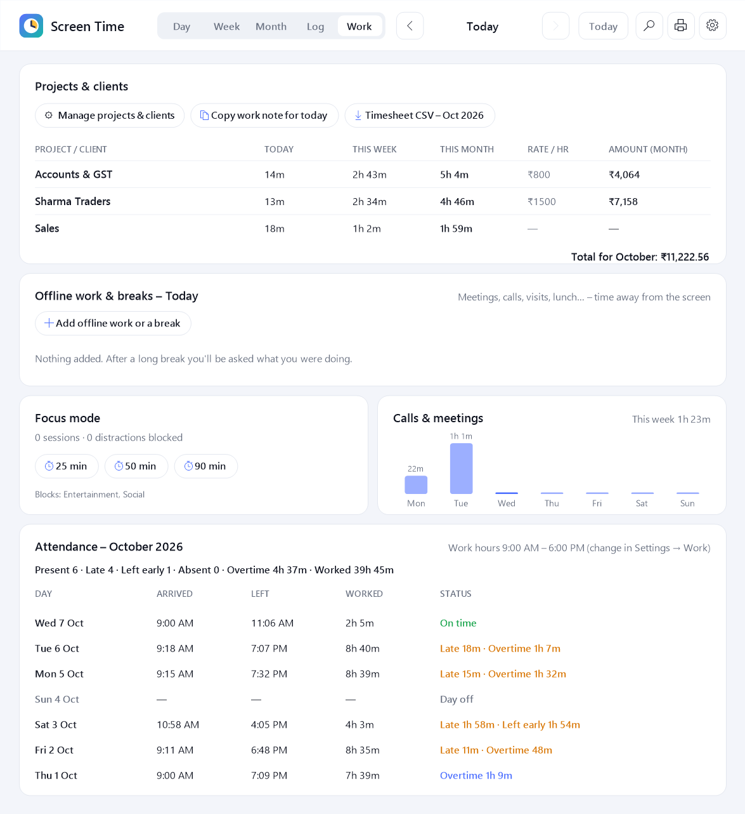

1Install
You only do this once.
- Download ScreenTimeTracker.zip. It goes to your Downloads folder.
- Right-click the zip file → Extract All… → Extract. A normal folder opens.
Don't run anything from inside the zip without extracting – it won't work. - Double-click Install Screen Time Tracker.
- It asks: "Start Screen Time Tracker automatically every time you turn on your PC?"
- Yes (recommended): it starts by itself in the background. You never need to remember.
- No: it only runs when you open it yourself.
- That's it. It says "installed and running" and can open this guide for you.
No admin password is needed. It installs only for you, in your own user folder.
2Find & open it
Screen Time Tracker lives as a small clock icon near the time, at the bottom-right of your screen. If you don't see it, click the little ^ arrow there. Once it's tracking, the icon shows today's hours, like 3h.
- Left-click the icon → opens your dashboard.
- Right-click the icon → quick menu: PDF report, focus mode, pause, settings and more.
- Keyboard shortcut from anywhere: Ctrl + Alt + S.
- Or open Screen Time Tracker from the Start menu or the Desktop.
3Start with Windows: on or off
You chose this while installing, and you can change it any time in two ways:
- Right-click the clock icon → click Start automatically with Windows. A tick ✓ means it's on.
- Or open Settings (⚙ in the dashboard) → General → Start automatically when I sign in to Windows.
When it's on, you never need to open it: it starts quietly every time you turn on your PC. When it's off, open it from the Start menu whenever you want tracking.
4The Day tab
Your whole day, from top to bottom. Use the < and > arrows at the top to go to other days.

| Part | What it tells you |
|---|---|
| Screen time | Total time you actually used the PC today, and the hours you were active. The coloured chip compares it with your usual amount by this time of day. |
| Tiles | Your most used app, how many apps you used, how often you switched between them, and how many times you unlocked the PC. |
| Insights | Focus score (0–100), deep work (25+ minutes of steady productive work), calls, app switching, a comparison with yesterday or last week, a short summary in plain words, badges, goals, streaks and warnings like "YouTube 3× more than usual". |
| Timeline | Your day as a coloured strip. Move the mouse over it to see exactly which app and page was open at that moment. Striped parts are offline work or breaks you added. |
| Hourly activity | How many minutes you used the PC in each hour. |
| Categories | How your time splits into Productive, Communication, Entertainment, Social and Browsing. |
| Websites | Time on each website: Google Sheets, YouTube, Gmail and so on. Click a site to change its category. |
| Pages, sheets & files | The exact sheet, page, document or chat. Hover to see its full name. |
| Apps | Every app you used. Click an app to see its pages and files, set a daily limit (you get a reminder when it's reached) or change its category. |
5Week & Month tabs
Week shows a bar for each day, your daily average, and a log in / log out table with the hours of each day. Click a day to open it.

Month shows a calendar: darker days mean more screen time, and a small orange dot means you started late. Click any day to open it. You'll also find buttons for a monthly PDF and a shareable Screen Time Wrapped picture.

6The Log tab
A diary of the day, in time order:
- Internet time: the exact time, checked against internet time servers, so all your log times are correct. There are also world clocks for cities you choose in Settings.
- Log in & log out: when the PC started, when you first and last used it, when you logged out, how long the PC was on, and how long you were away.
- Activity log: every app in order, with the pages and files you used, plus calls, breaks, lock, sleep, focus sessions and more. Tiny switches under 15 seconds are hidden; click the button at the top to show everything.

7PDF reports – any day, any time
- Open the dashboard and click the 🖨 printer button at the top-right.
Or right-click the clock icon → Export report (PDF)… - Choose One day, The week of, The month of, or From … to …, and pick the date.
- Click Create PDF, choose where to save it, and it opens.
The report includes log in and log out, first and last activity, a summary, focus score, timeline, hourly chart, categories, clients with amounts, offline work, apps, websites, pages and files, and the full activity log.
- Today's report so far: right-click the icon → Today's report (PDF) – open now.
- Automatic weekly report: every Monday, last week's PDF is saved to Documents → Screen Time Reports.

8Clients, hours & attendance (Work tab)
Hours per client or project
- Go to the Work tab → Manage projects & clients.
- Add a row for each client. Under Keywords, type words that appear in their sheet, file or website names, separated by commas. For example: Sharma, ST-.
- Optionally add an hourly rate, and apps that always belong to that client (for example tallyprime.exe).
Now the Work tab shows hours for today, this week and this month, plus amounts. Click Timesheet CSV to get a spreadsheet for the month, or Copy work note to paste "what I did today" into WhatsApp or email.

Time away from the screen
After you've been away for a while (15 minutes by default), a small box asks "What were you doing?": Meeting, Phone call, Client visit, Lunch… Pick one and choose the client if it was work. It's added to your log and timesheet. You can also click Add offline work or a break any time.
Attendance
Set your work hours and days in Settings → Work & focus. The Work tab then shows each day's arrival, departure, hours worked, and whether you were late, left early, did overtime, or were absent. Arrival uses your first real activity, so turning the PC on at 7 and starting work at 9 counts as 9.
9Focus mode
Right-click the icon → Focus mode → 25, 50 or 90 minutes. You can also use the Work tab. While it's on, distracting apps and websites (Entertainment and Social by default) are minimised straight away, with a friendly reminder. A banner shows the time left. Change what's blocked in Settings → Work & focus.
10Reminders & goals
In Settings → Goals & reminders you can switch on:
- Break reminder: for example, every 60 minutes of non-stop screen time.
- Eye care 20-20-20: every 20 minutes, look at something 20 feet away for 20 seconds.
- Water reminder and a late-night warning.
- Goals: maximum daily screen time, minimum productive time, maximum entertainment or social media. Progress shows in the Insights card, and you get a notification when you reach a goal.
- Per-app limits: click an app in the Apps list → Set daily limit.
11Handy extras
- Search (🔍 button or Ctrl+F): find any sheet, site, client or app in your history. Or ask "What was I doing at 3 PM on Tuesday?"
- Pause: right-click the icon → Pause tracking for 15 minutes, 30 minutes, 1 hour, or until you resume.
- Mini widget: a small always-on-top bar showing today's time. Turn it on from the icon menu, and drag it anywhere.
- Screen Time Wrapped: a shareable picture card of your month or year. Find it in the icon menu or the Month tab.
- CSV export for spreadsheets: Settings → Reports & data.
- Hindi headings: Settings → General → Language.
- Two PCs (for example office and home): Settings → Reports & data → share through a OneDrive folder.
12How time is counted
- Every second it checks which window is in front and adds that second to that app, and to the page or file inside it.
- Away time doesn't count. After 5 minutes without touching the keyboard or mouse, it stops counting and takes those 5 minutes back off.
- Videos and calls do count: if sound is playing (speakers or earphones) or your microphone is in use, you're treated as active.
- Time while the PC is locked, asleep or paused isn't counted.
Example: you turn the PC on at 7:00, work from 9:00 to 6:00 and leave it on. You'll see Log in 7:00, first activity 9:00, last activity 6:00, and screen time of only your real working time. The idle hours are shown as "away".
13Settings explained
Open them with ⚙ in the dashboard, or right-click the icon → Settings…
| Tab | What you can change |
|---|---|
| General | Start with Windows · Ctrl+Alt+S shortcut · hours on the tray icon · mini widget · update notices · theme (light/dark) · language · world clocks · internet time check |
| Tracking | Record page and file names (on/off) · minutes before you count as away · keep counting during videos and calls · when to ask "what were you doing?" · apps that should never be tracked |
| Goals & reminders | Daily goal · productive, entertainment and social goals · break, water and 20-20-20 reminders · late-night warning |
| Work & focus | Work hours and days · grace minutes · currency · projects and clients · what focus mode blocks |
| Reports & data | Weekly PDF · reports folder · PDF and CSV export · backup · PIN lock · how long to keep history · sharing between two PCs · delete all history |
14Privacy
- Everything stays on your PC, in %APPDATA%\Screen Time Tracker. Nothing is uploaded.
- It records app names, window titles and website names with times. It never records what you type, screenshots, passwords or full web addresses.
- Private / incognito windows are only noted as "Private window".
- To hide an app completely: Settings → Tracking → Never track these apps. To lock the dashboard: Settings → Reports & data → PIN.
- The only internet use is checking the correct time and whether a new version is available.
15Uninstall
Open Windows Settings → Apps → Installed apps, find Screen Time Tracker, then ⋯ → Uninstall. It asks whether to keep or delete your history.
16Problems?
| Problem | Fix |
|---|---|
| I can't see the clock icon | Click the ^ arrow near the time. To keep it always visible, drag it from there onto the taskbar. Or press Ctrl+Alt+S. |
| It didn't start after restarting the PC | Right-click the icon (or open it from the Start menu) and make sure Start automatically with Windows has a tick. |
| "Windows protected your PC" | Click More info → Run anyway. |
| Nothing happens when I double-click Install | Make sure you extracted the zip first (right-click → Extract All). |
| Websites show only the page name | Leave the browser in front for a few seconds; the website name is read from the address bar. |
| Something else | Report it on GitHub. If there's an errors.log file in the data folder, attach it. |